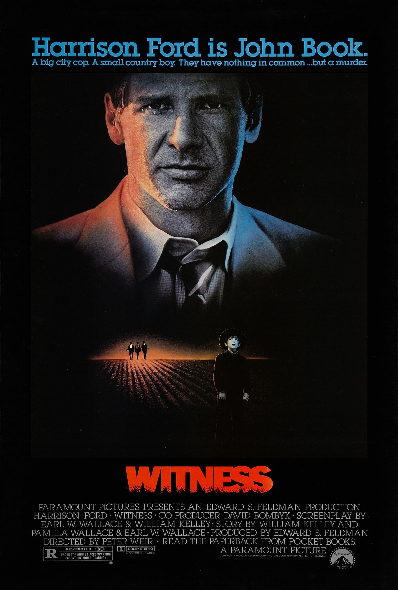

Witness
58th Academy Awards
(Oscars 1986)
8 Nominations, 2 Awards
| Watched |
| Nominations | ||
|---|---|---|
| Category | Nominees | Result |
| Best Picture | Edward S. Feldman | Nominated |
| Actor in a Leading Role | Harrison Ford | Nominated |
| Directing | Peter Weir | Nominated |
| Writing (Screenplay Written Directly for the Screen) | Earl W. Wallace, Pamela Wallace, and William Kelley | Won |
| Cinematography | John Seale | Nominated |
| Film Editing | Thom Noble | Won |
| Art Direction | John Anderson and Stan Jolley | Nominated |
| Music (Original Score) | Maurice Jarre | Nominated |